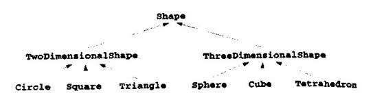

教学目标
●能通过继承现有的类建立新类
●了解继承是如何提高软件的可复用性
●了解基类和派生类的概念
●能够用多重继承从多个基类派生出新类
本章和下一章要讨论面向对象的程序设计的两个极其重要的功能——继承(inheritance)和多态性(polymorphism)。继承是软件复用的一种形式，实现这种形式的方法是从现有的类建立新类。新类继承了现有类的属性和行为，并且为了使新类具有自己所需的功能，新类还要对这些属性和行为予以修饰。软件复用缩短了程序的开发时间，促使开发人员复用已经测试和调试好的高质量的软件，
减少了系统投入使用后可能出现的问题。所有这些都是激动人心的。利用多态性可以编写出对现有的各种类和将要实现的类予以加工的程序。继承和多态性是处理复杂软件的一种很有效的技术。
在建立一个新类时，程序员可以让新类继承预定义基类(baseclass)的数据成员和成员函数，而不必重新编写新的数据成员和成员函数。这种新类称为派生类(derivedclass)。派生类本身也可能会成为未来派生类的基类。对于单一继承，派生类只有一个基类。对于多重继承，派生类常常是从多个基类派生出来的，这些基类之间可能毫无关系。单一继承比较简单，我们介绍几个例子，使读者能很快成为专家。多重继承更复杂，也更容易出错，因此我们只显示简单的例子，建议读者在进一步深造之后再利用这种功能。
派生类通常添加了其自身的数据成员和成员函数，因而通常比基类大得多。派生类比基类更具体，它代表了一组外延较小的对象。对于单一继承，派生类和基类有相同的起源。继承的真正魅力在于能够添加基类所没有的特点以及取代和改进从基类继承来的特点。
C++提供三种继承：public、protected和private。本章以介绍public为主．附带介绍另外两种。第15章将介绍如何用private继承代替复合。第三种形式是protected继承，是C++中的新生事物，用得还不多。在public继承中，派生类的对象也是其基类的对象，但是反过来基类对象不是其派生类的对象。本章要利用“派生类对象是基类的对象”这一关系完成一些有趣的操作。例如，把各种不同但又通过继承而相关的对象连成基类对象的链表，它允许用通常的方法处理各种对象。在本章和下一章中就会看到，这是面向对象程序设计的一种重要的功能。
本章介绍了一种新的成员访问控制形式，即protected访问。派生类及其友元允许访问protected基类成员，而其他函数则不行。
开发软件系统的经验表明，软件系统中的大部分代码都是处理紧密相关的特殊情况。由于设计者和程序员的精力都集中于这些特殊情况，因而很难在这种系统中看到“大手笔”的程序作品。面向对象的程序设计提供了几种“见树木而知森林”的方法，有时把这个过程称为抽象。
如果一个程序中有多种密切相关的特殊情况，通常的做法是用switch语句来区分各种特殊情况，然后对每种情况提供处理逻辑。第10章将讲述如何通过继承和多态性用更简单的逻辑取代switch逻辑。
我们要区别“是一个对象”和“有一个对象”的差别(以下简称“是”关系和“有”关系)。“是”关系是一种继承，在“是”关系中，派生类的对象也以作为基类的对象处理。而“有”关系是一种复合(见图7．4)，在这种关系中，一个类的对象拥有作为其成员的其他类的对象。
派生类不能访问其基类的private成员，否则会破坏基类的封装性。但是，派生类能够访问基类的public成员和protected成员。基类中不应该让派生类通过继承而访问的成员要在基类中声明为privale。派生类只能通过基类public和protected接口提供的访问函数访问基类的private成员。
继承存在的一个问题是派生类会继承它无需拥有或者不应该拥有的基类public成员函数。基类中不适合于派生类的成员可以在派生类中重新加以定义。有些情况下，不适合用public继承。
继承所最具有吸引力的特点是新类可以从现有的类库中继承。项目开发者可以开发出自己的类库，也可以利用已广为使用的类库。基于这种观点，将来有一天，软件也可以像当今的硬件一样用标准的可复用组件进行构造。未来需要功能更强的软件，软件的这种开发方式正可以迎接这种挑战。
一个类的对象经常会是另一个类的对象。例如，矩形当然是四边形(正方形、平行四边形和梯形也是这样)，因此可以说矩形类Rectangle是从四边形类Quadrilateral继承而来的。在本例中，类Quadrilateral叫做基类，类Rectangle称为派生类。矩形是四边形的一种特殊类型，但是要说四边形是矩形则是不正确的。图9．1示例了几个简单的继承例子。
基类 派生类
student GraduateStudent
UndergraduateStudent
Shape Circle
Triangle
Rectangle
Loan CarLoan
HomeIpprovementLoan
MoregageLoan
Employee FacultyMember
StaffMember
Account CheckingAccount
SavingsAccount
图9．1 几个简单的继承例子
其他的面向对象程序设计语言使用了不同的术语。例如，在继承方面，smslltalk语言把基类类称为超类，派生类叫做子类。
因为由继承而产生的派生类通常比基类大，所以超类和子类这样的术语似乎是不合适的，本书没有使用这些术语。由于派生类对象可以看成基类的对象，因此基类有更多相关对象，而派生类的相关对象更少，因此可以把基类理解为“超类”，派生类理解为“子类”。
继承形成了树状层次结构，基类和它的派生类构成了一种层次关系。一个类可以单独存在，但是当利用继承机制使用该类时，该类就成为给其他类提供属性和行为的基类，或者成为继承其他类的属性和行为的派生类。
下面是一个简单的继承层次结构。一个典型的大学社区有成千上万个人，他们是社区的成员。这些人由雇员(employee)和学生(student)组成。雇员又分为学院成员(faculty)和职员(staff)，学院成员既可能是校长和系主任等等的管理者(administrator)，也可能是教员(teacher)。这种关系构成的继承层次结构如图9．2所示。注意有些行政人员也任了课，因此我们用多重继承构成AdministratorTeacher类。由于学生常常在学校打工，职工也常常去修课，因此还可以用多重继承构成EmployeeStudent类。
另外一个实际存在的继承层次结构是像图9．3那样的shape层次结构。初次学习面向对象程序设计的学生都认为现实世界中存在着大量具有层次结构的实例，也正因为如此，这些学生从来没有认真思考过现实世界中的这种层次结构是如何分门别类的，所以应该在这方面好好思考一下。
为了说明类CommissionWorker是从类Employee派生而来的，类CommissionWorker通常要作如下形式的定义；
class CommissionWorker：public Employee{
上述继承方法称为public继承(public inheritance)，这种类型的继承是最常用的。本章还要讨论private继承(privateinheritane)和protected继承(protectedinheritance)。对于public继承来说，基类的public成员和protected成员可以分别作为派生类的public成员和protected成员而被继承。 用类似的方法处理基类对象和派生类对象是可能的。基类的属性和行为表述了基类对象及派生类对象的共性。
从基类public派生出来的所有对象都可以作为基类对象处理。我们将研究很多例子。在这些例子中，我们可以利用这种关系很容易地设计程序，而非面向对象的语言(如C语言)就做不到这一点。